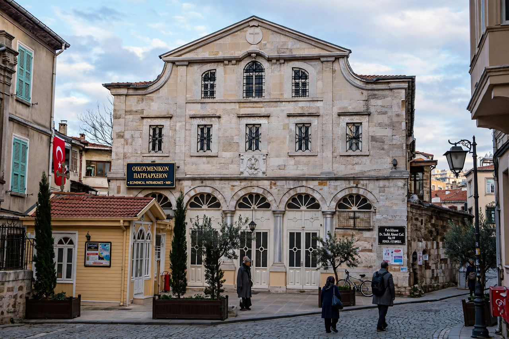

Senior see of the Eastern Orthodox Church, based in Istanbul
| Ecumenical Patriarchate | |
|---|---|
 St George's Church, Phanar, Istanbul | |
| Headquarters | Phanar (Fener), Istanbul, Turkey |
| Cathedral | Church of St George |
| Primate | Ecumenical Patriarch Bartholomew I (since 1991) |
| Status | First among equals within Eastern Orthodoxy |
The Ecumenical Patriarchate of Constantinople is one of the fourteen to sixteen autocephalous churches that together compose the Eastern Orthodox Church. It is headed by the Ecumenical Patriarch of Constantinople, currently Bartholomew I, who is regarded within Orthodoxy as primus inter pares ("first among equals") — the senior spiritual leader of the world's Orthodox Christians, though without the jurisdictional supremacy claimed by the Pope in Roman Catholicism.
The see traces its origins to the apostolic age and rose with Constantinople, capital of the Byzantine Empire, to be recognised at the councils of Constantinople (381) and Chalcedon (451) as second only to Rome. After the East–West Schism of 1054 it became the centre of the Greek Orthodox world. Following the Ottoman conquest of Constantinople in 1453, the Patriarchate continued as the civil as well as religious head (millet-bashi) of Orthodox Christians under Ottoman rule.
The Patriarchate is seated in the Phanar (Fener) district of Istanbul, at the Church of St George, since 1601. Its direct jurisdiction covers Turkey, Mount Athos, Crete, the Dodecanese, and much of the Greek Orthodox diaspora in the Americas, Western Europe, and Australia. In 2019 the Patriarchate granted autocephaly to the Orthodox Church of Ukraine, precipitating a rupture with the Moscow Patriarchate. Bartholomew I is also noted for his environmental advocacy, earning the informal title "Green Patriarch". Turkey requires the Patriarch to be a Turkish citizen and does not officially recognise the "Ecumenical" title, a longstanding point of tension.